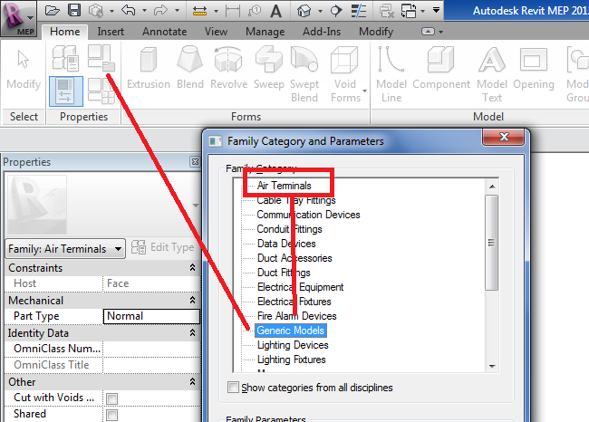

Basic Parametric Cube Family Tutorial
I recently discussed the programmatic creation of an extrusion family. Now I just noticed that there is a new little eight and a half minute video showing how to do something similar through the user interface, just as a basic introduction to setting up constraints and parameters in the family definition context.
In his wonderful buildz blog, Zach Kron recently presented a quick 'back to basics' demonstration of making a parametric cube, i.e. how to hook up geometry to dimensional parameters. He says: "This is a basic exercise for folks new to Revit and Vasari. I was explaining this to someone the other day and decided to just encapsulate the mini lesson here":
There is a lot of powerful stuff and important hints in this short demo, so it is well worth watching for almost anybody interested in working with families in any way whatsoever, whether manually or programmatically. Highly recommended!
Changing the Family Document Category
Here is another issue that frequently arises with programmatic family creation: you cannot change the family document category through the API, although it is possible to do so from the user interface, because the Document.OwnerFamily.FamilyCategory property is read-only. Here is a typical case:
Question: How can I change the family category from 'Generic Model' to 'Air Terminal'?
My goal is create a new Air Terminal family based on 'Metric Generic Model face based.rft':

Answer: This is a currently a known limitation, and we have an open wish list item for it.
There is a simple workaround that you can use, though: manually create your own custom template file in advance, and then make use of that in your calls from the API.